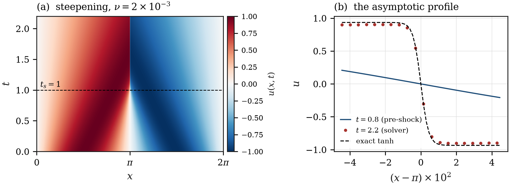
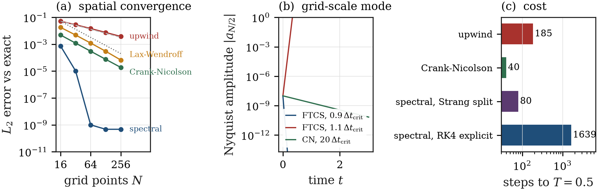
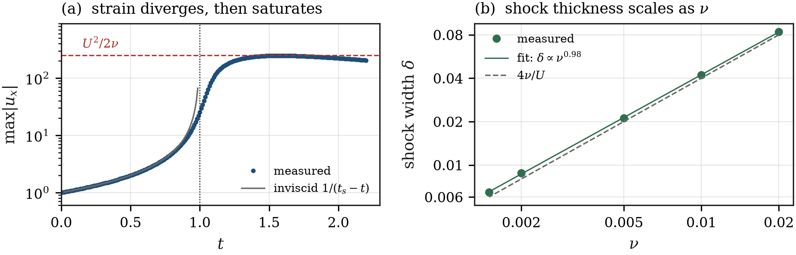
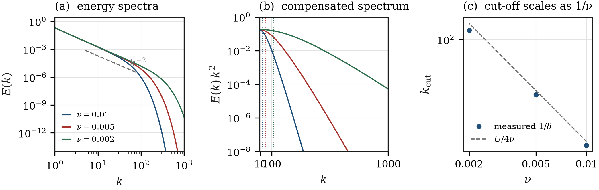
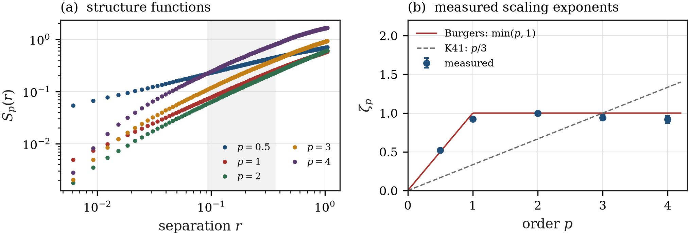
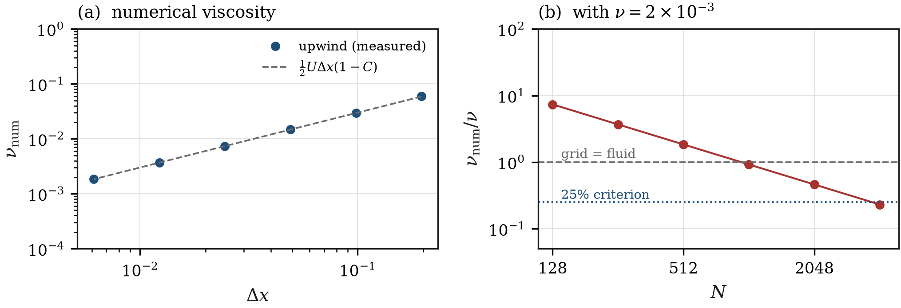

DIY project · PHY341/745
Shock waves in a
one-dimensional fluid
How much of what you see is the grid?
Aryan Bandyopadhyay · 2411014
Physics Computer Lab · NISER Bhubaneswar
One equation
ut + u ux = ν uxx
- nonlinearity steepens the wave
- viscosity smooths it
- the balance is a shock
In one dimension, incompressibility forces ux = 0,
so advection and the pressure gradient both vanish. Dropping only the
pressure gradient leaves this — the 1-D Navier–Stokes equation.

The whole talk in one picture: steepening, breaking at
t = 1, and the asymptotic profile.
The only theory needed
When does it break?
Characteristics x = ξ + u₀(ξ)t cross at
ts = −1 / min u₀′ = 1
How thick is what remains?
δ = 4ν/U, u = −U tanh[U(x−x₀)/2ν]
Four predictions, no free parameters
E(k) ∝ k−2
ζp = min(p, 1)
Everything in this talk is measured against one of these.
That is what makes the numerics measurable rather than decorative.
Five solvers, three diagnostics
| scheme | order |
|---|
| upwind | 1 |
| Lax–Wendroff | 2 |
| FTCS | 2 (unstable) |
| Crank–Nicolson + Heun | 2 |
| spectral, Strang + RK4 | exponential |
All written for this project. NumPy only for arrays —
no np.fft, no scipy. The FFT is radix-2 and
checked against a naive DFT to 10−15.
Diagnostics
- δ = jump / max slope
- E(k) from the from-scratch FFT
- Sp(r), moments of increments
Reference
exact Cole–Hopf solution, grid-independent to 10−12
Result 1 — are the solvers right?

measured orders 0.94, 2.02, 2.00,
spectral 7.5×10−4 → 10−9; growth rates match von
Neumann theory to 0.3%.
Result 2 — breaking, and what is left behind

strain follows 1/(ts−t) to 0.5% and saturates at
247.5 vs 250; δ ∝ ν0.985, prefactor
5–10% above 4ν/U.
Result 3 — the spectrum has a movable end

E(k) ∝ k−2.030±0.001 for every ν; the cut-off
kcut ∝ ν−0.971. Viscosity changes where the spectrum
ends, not its shape.
Result 4 — many shocks, one exponent

ζp = 0.52, 0.92, 1.00, 0.94, 0.92 versus
min(p,1) and p/3 — a factor of three apart at p = 4, with a 5% error bar.
Result 5 — how much of the viscosity is the grid?

νnum = ½UΔx(1−C) verified to 1%
over five decades; at N = 256 the grid is 3.7× more
viscous than the fluid.
What I take away
- Convergence order does not predict shock quality: all four
schemes have known orders and disagree qualitatively — smeared vs ringed.
- Integral quantities are robust, local ones are not: the k−2
slope survives a 103 change in ν; the shock thickness does not.
- Numerical dissipation is measurable, has a formula, and should be
computed rather than hoped away.
Practical criterion. Resolve the shock, not the
wavelength: Δx ≲ 0.2 δ — at least five points per shock.
Limitations, and what I would do next
Limitations
- inertial range only ≈1.5 decades
- statistics taken at one time, not stationary
- one equation; no vortex stretching (absent in 1-D)
Next
- forced, statistically stationary run
- WENO/TVD scheme, same ζp test
- extension to 2-D
References & code
- J. M. Burgers, Adv. Appl. Mech. 1, 171 (1948).
- J. Bec & K. Khanin, Phys. Rep. 447, 1 (2007).
- G. B. Whitham, Linear and Nonlinear Waves (Wiley, 1974), ch. 2–4.
- R. J. LeVeque, Finite Volume Methods for Hyperbolic Problems (CUP, 2002), ch. 4, 6.
- J. P. Boyd, Chebyshev and Fourier Spectral Methods (Dover, 2001), ch. 2.
- J. D. Cole, Quart. Appl. Math. 9, 225 (1951).
Code, figures and every number:
github.com/Aryans-lab/Computational_Physics_Lab → project_burgulence/